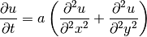
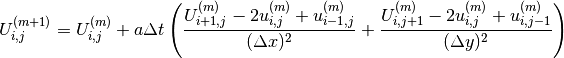
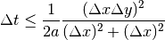

Thermal model¶
- class thermal_model.ThermalModel(matrix_materials, max_TC=7.8)[source]¶
- __init__(matrix_materials, max_TC=7.8)[source]¶
Provides the thermal model through two-dimensional difussion:
Definition: 
Applying a finite forward difference approximations to the derivatives, it is obtained the following discrete function:

To avoid noise in the solution, it is necessary to ensure the following stability criteria:

Arguments: - matrix_materials
- maxTC
matrix_materials = initial matrix materials (numpy objetc array, array of class Material)
maxTC = max transfer coefficient, important to define stability of dt in the model
- applySimulationConditions(ambient=40, internal=10)[source]¶
“Set the temperatures for the simulation
- __dict__ = dict_proxy({'__module__': 'thermal_model', 'applySimulationConditions': <function applySimulationConditions at 0x7f39f11282a8>, 'simulate': <function simulate at 0x7f39f1128320>, '__dict__': <attribute '__dict__' of 'ThermalModel' objects>, '__weakref__': <attribute '__weakref__' of 'ThermalModel' objects>, '__doc__': None, '__init__': <function __init__ at 0x7f39f1128230>})¶
- __module__ = 'thermal_model'¶
- __weakref__¶
list of weak references to the object (if defined)